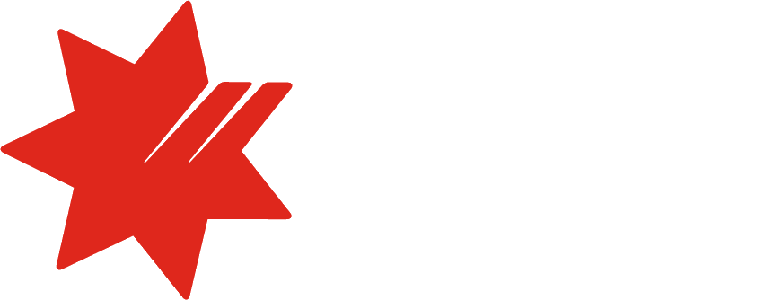

Calm products for money, data and trust. Every claim comes with its receipt.
I lead design where a wrong number costs real money: a consumer stablecoin wallet designed for phone and desktop from the first screen, credit workflows and merchant onboarding at NAB, and an AI-assisted regulatory tool.
Scroll
From up here the hand-offs show. The same details, copied from a spreadsheet into an email, then typed again. I design the system so they are typed once.
Seen from above.
Three tools and one email thread, mapped before a single screen. What the platform can check now runs in the background. When a request fails, the screen says why.
Designed from Ho Chi Minh City. Shipped for teams in Melbourne and London.
- Facility hand-offup to a day → ~5 min
- Merchant dropout−20%
- Time to apply21–25 → ~10 min
- Exposure check clicks−67%
- RegShield ExQual3.2 → 4.6
- Design systems owned2
Eight cases. Each one proves something different.
The LSEG case is open to everyone. The other seven are confidential bank and client work, so each opens with a password; the summaries here stay public. The password is in my application, or ask me. For consumer screens on phone and desktop, start with the Huma wallet. For conversation design, try Ask about Minh in the corner; how it works is on the About page.

NAB · Markets·Aug 2026 – nowPasswordFive thousand reporting breaks a day, fixed by hand. Eight people rated that way of working 3.2 out of 5, and my rebuild of an inherited prototype 4.6.
Judgement in a regulated product: rebuilding an inherited prototype, with AI keeping the records and people making every decision.
- 3.2 → 4.6 / 5Tested ExQual, Platinum (target Bronze)
- 8.3 / 10Tested Likely to recommend
- Unera·Sep – Oct 2026Password
An operations console designed with its bad days included. I said which parts AI had drafted, and the team cut four features before anyone built them.
Leading with a written standard: a part-time junior designer, open reviews, and a hand-off engineers can build from.
- 4Record Features cut before anyone built them
- Unera·2026, from JunePassword
A stablecoin portal that shows its proof before it asks for your money.
Trust design and motion: buy, hold, redeem and prove, with copy that shows evidence first.
- 3Record Unprovable claims removed from the portal
- NAB · Corporate & Institutional Banking·Jan – Jun 2026Password
Hundreds of millions approved, then up to a day of email. In testing, the hand-off took five minutes.
Research to priority to proof: scoring what bankers said, scoping around another team, and a bar set before design.
- up to a day → ~5 minTested Hand-off after approval
- Unera·Dec 2025 – 2026Password
In crypto, a normal wait looks like a failure. I designed one tracker so donors always know where their money is.
Consumer craft on mobile and desktop, and a design system I own.
- 99 / 99Record Automated checks passing after fixes
- NAB · Corporate & Institutional Banking·May – Aug 2025Password
Bankers said SLE stood for Slow, Long, Exhausting. I threw away my first design, and the second is live.
Judgement and coaching: setting the bar first, killing my own first version, and bringing a second designer in.
- 4.57 / 5Tested ExQual (works like SUS), target Silver
- NAB · Merchant Services·May 2024 – May 2025Password
95% of merchants who started the digital application gave up. We stopped asking them what we already knew.
Strategy: picking the segment, making the case to remove the upsell, and measuring after launch.
- 21–25 → ~10 minTested Time to apply, existing customers
- LSEGRefinitiv Labs · LSEG·Aug – Dec 2021
They asked for automatic data collection. What they needed was a shared list and a way to see who was doing what.
Questioning the brief before building it.
- 89Tested System Usability Scale
I raise the bar by making it easier to meet.
Agree the bar first
Before screens, product, engineering and I agree what good looks like and how we’ll measure it.
Write decisions down
Every call gets a line: options, choice, reason, who asked. Arguments happen once.
Teach on real work
I coach in reviews of live work. That’s how I ran AI adoption for my NAB design chapter: one-to-one, on what people were designing that week.
Hiring a lead for something people have to trust?
Every claim comes with its receipt.
I’m looking at Lead Product Designer roles in Ho Chi Minh City and remote across APAC.